* 이탈리안 바리스타
혼자서 공부하는것 보단 강의랑 책이랑 같이 듣고 보고 하는게 이해가 쉽고 모르는 것들도 보고 가는 느김입니다! 실기 시험도 몰라 던 제가 강의를 듣고 많은 걸 알아 갔습니다 바리스타 가격증 실기 시험 꼭 봐서 따고 싶네요!. 최*주 (kor2****)
출근길엔 피로! 퇴근길엔 녹초!
출근길엔 피로! 퇴근길엔 녹초!
야근으로 인해, 또는 잦은 회식으로 인해 퇴근시간이 늦는 경우가 허다했습니다.
이로 인해 자기계발 시간도 갖지 못한 채 바로 잠들고
다음 날 아침에 일찍 일어나 출근하는 것이 일상이었죠.
때문에 만성피로 누적으로 활력은 DOWN! 남는 건 공허함 뿐
BUT! 이제는 상황이 바뀌었습니다!
주 52시간 근무제가 적용되기 시작하면서
일과 라이프의 균형을 중시하는 워라밸(Work & Life Balance)이라는 용어가 등장했고
퇴근 후 취미활동과 자기계발을 하는 직장인들이 늘기 시작했습니다.

자료 출처: 오픈서베이 (단위: %)

실제 오픈서베이에서 취미생활 / 자기계발 활동 여부를 조사한 결과 활동분야가 있다는 응답은 76% 이상
특히 직장 연차별로 조사한 응답에서는 1~3년차가 85% 이상을 차지했습니다.
자료 출처: 잡코리아 & 알바몬 (단위: %)
더 나아가 지난 2019년 잡코리아와 알바몬이 조사한
“올해 나를 빛낸 일”결과에 따르면 1위가 “취미/특기를 만든 일”이었습니다.
그만큼 퇴근 후 생산적인 활동을 통해 더 나은 삶을 보내기를 희망하는 것이죠.
생산적인 활동을 즐기면서 삶의 활력을 얻고 싶어하는 분들을 위한

패키지 구상은 이렇습니다!
조리/제과제빵
바리스타
메이트업/헤어
에스테틱/네일
요가/필라테스
라이프 스타일
패키지
게임 개발자 과정으로, 배워서 바로 활용할 수 있는 실전에 강한 강의!

퇴근 후 또는 여유 시간에 생산적인 취미 활동을 하고 싶은 분
요리나 뷰티에 관심이 있어 좀 더 전문적으로 배우고 싶은 분
자기 관리에 보람을 느끼거나 경험하고 싶은 분
첫 단추를 제대로 끼우지 못하면 겪게 되는 세 가지 RISK
평소 퇴근 후 취미생활이 없어 무료했던 분들
그리고 미래가 불안하여 제2의 삶을 미리미리 준비하려는 분들
따즈아의 라이프 스타일 패키지를 수강하시면
위와 같은 세 가지 장점을 얻으실 수 있습니다!
자 그럼 강의 커리큘럼은 어떻게 구상했는지 지금부터 알아볼까요?
01
제과제빵/바리스타
조리기능사
한식, 양식, 일식, 중식 등 조리기능사에 해당되는 과정을 한 번에 ALL IN ONE
한식조리기능사
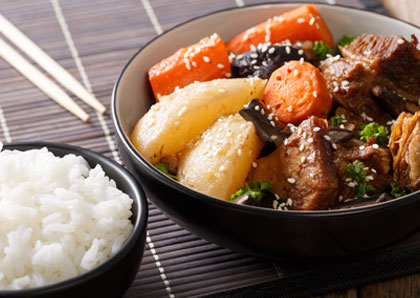양식조리기능사

일식조리기능사
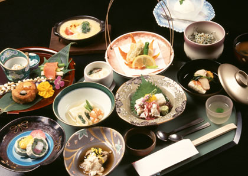중식조리기능사
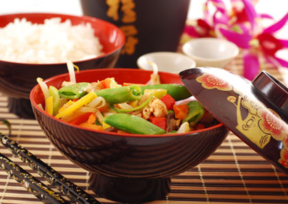제과제빵
제과분야로의 전향을 위해 제과/제빵기능사 준비하려는 분들에게 최적화된 강의
이론과 실기 시험 준비 & 기본적인 조리 능력 교육 & 데코레이션 실습까지
꼼꼼하게 진행해요.
Min`s 베이킹 하우스
케이크디자인
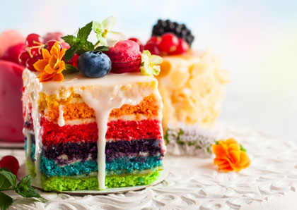제빵기능사실기
제과기능사실기
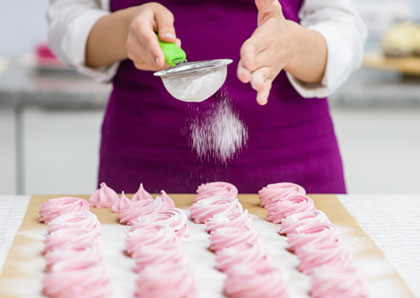바리스타
나만의 커피숍을 차리고 싶은 분들
또는 전문 바리스타를 꿈꾸는 분들을 위한 자격증 과정이에요 :)
바리스타 베이직

이탈리안 바리스타
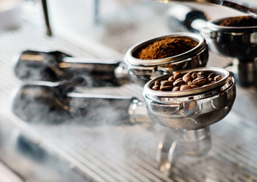생활요리
생활 속에서 유용하게 활용할 수 있는 요리 커리큘럼으로
평소에 요리를 너무 못해서 이번 기회에 잘하고 싶다고
생각하는 분들에게 딱 알맞는 강의입니다.
맛있는 다이어트

마스터셰프 : 베이직 클래스
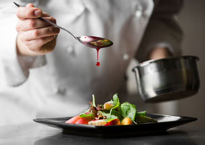일본가정식 시즌1
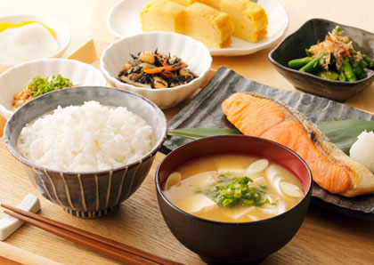일본가정식 시즌2
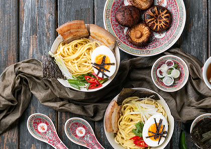일본가정식 시즌3

서양가정식 시즌1
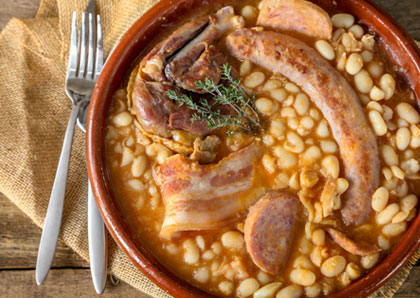서양가정식 시즌2
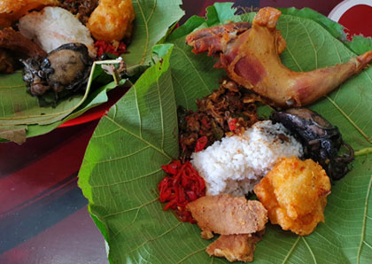한국가정식 시즌1

한국가정식 시즌2
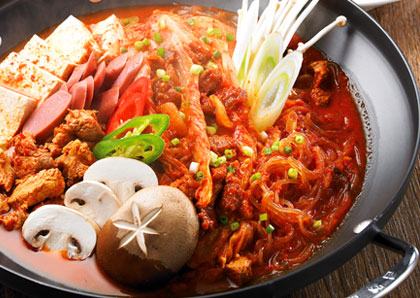엄마네 반찬가게 시즌1
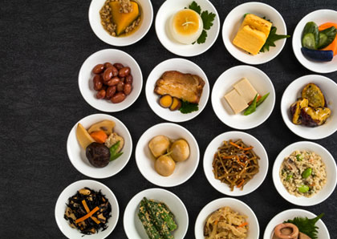엄마네 반찬가게 시즌2

02
뷰티(미용)
국가자격증 미용사 필기
자격증 취득을 위한 이론 과정으로
메이크업 & 네일아트 & 피부미용 & 헤어디자인 등을 공부하게 됩니다.
공중위생관리학 이론
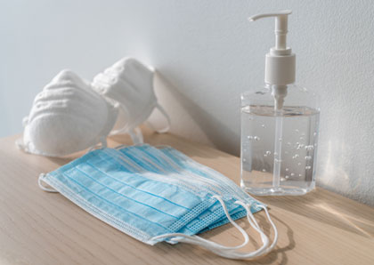피부 미용이론

네일 미용학
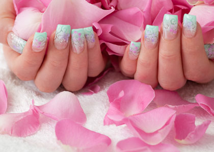헤어 미용학
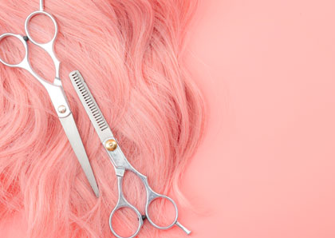메이크업 미용학
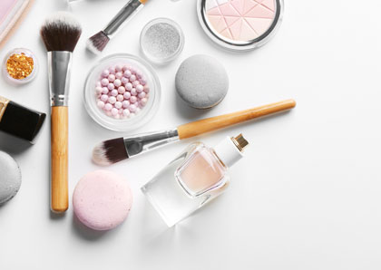국가자격증 미용사 실기
자격증 취득을 위한 실기 과정으로
메이크업 & 네일아트 & 피부미용 & 헤어디자인 등을 공부하게 됩니다.
미용사 국가자격증
헤어국가자격증
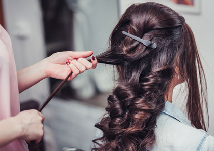에스테틱 국가자격증

네일아트 국가자격증

메이크업 국가자격증

실전뷰티 베이직
평소 미용에 관심이 많고 생활 속에서 유용하게 활용할 수 있는
메이크업 & 왁싱 & 속눈썹 연장 등을 배우게 됩니다.
PLUS! 뷰티 분야로 나만의 가게를 차리고 싶은 분들께도 적극 추천합니다.
면접,스타일링 & 메이크업
셀프 M.O.T.D
왁싱 토튜리얼
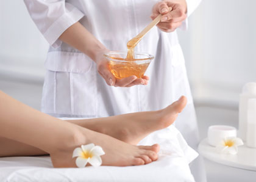속눈썹 연장

실전뷰티 프로
평소 미용에 관심이 많고 생활 속에서 유용하게 활용할 수 있는
메이크업 & 왁싱 & 속눈썹 연장 등을 배우게 됩니다.
PLUS! 뷰티 분야로 나만의 가게를 차리고 싶은 분들께도 적극 추천합니다.
헤어 커트심화

에스테틱 프로
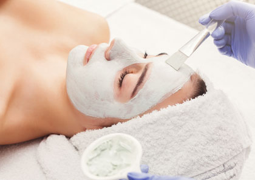헤어 디자인 프로

네일아트 프로

메이크업 프로
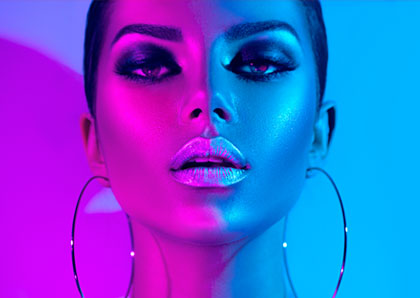03
헬스케어
요가
건강한 라이프 스타일을 누리고 싶은 분들을 위한 강의 커리큘럼으로
집에서도, 사무실에서도 간단히 할 수 있는 요가 동작이 담겼습니다.
두잉요가 MAT
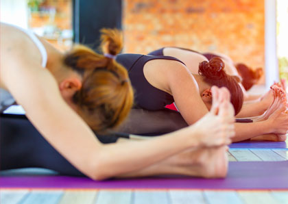두잉요가 In The office
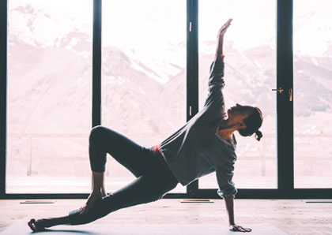필라테스
집에서도 쉽게 따라할 수 있는 필라테스 동작, 자격증 취득을 위한 과정으로
바르고 안정된 자세교정을 원하거나, 필라테스 강사로 전향하려는 분들께 추천합니다.
필라테스 일반
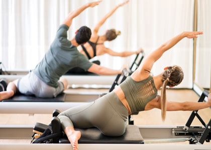필라테스 자격증

지금 바로 샘플강의로 확인하세요.
★★★★★
샘플 강의 지금 맛보기
★★★★★
샘플 강의 지금 맛보기
★★★★★
샘플 강의 지금 맛보기
PLUS

01 현업 강사 중심 따즈아는 초심자들이 수업에 쉽게 따라갈 수 있도록 오랜 강사 경력을 지닌 100% 현업 강사로 채용하여 지도합니다.
02 기초+실무로 실력을 탄탄히 초심자는 기초지식도 중요하지만 실무에 바로 투입됐을 때 바로 써먹을 수 있도록 트레이닝 되어야 합니다. 이를 위해 이론과 실무를 밸런스 있게 맞추어 수업을 진행합니다.

03 자체 스튜디오 보유로 발 빠른 대처 자체 스튜디오 보유로 기획부터 유통까지 모든 컨텐츠를 직접 제작하며 교육 개정 변경 시 발빠르게 대처할 수 있습니다.
오랜 지도 능력 & 실무 경력을 갖춘 현업 베테랑 강사진
이력사항
現 코리아교육그룹 코리아요리아카데미 교육부 커피바리스타 강사 [자격사항] 한국커피협회 바리스타2급 한국커피협회 바리스타1급 SCA Batista_Skills Foundation / Intermediate / Professional SCA Sensory_Skills_Intermediate / Professional SCA Green_Coffee_Intermediate / professional SCA Coffee brewing_Foundation / Intermediate SCA Roasting_Foundation / Intermediate 국제커피조향사 Foundation / Intermediate / Instructor Italy_Barista_School Espresso&Cappuccino Italy_Barista_School_CoffeeArt Italy_Barista_School_Trainer
[수상경력 2017 푸드트렌드페어 바리스타 부문 금상 홈카페어워드 브루잉 부문 동상 [심사경력 2018 SENTON 아로마스터 테크니컬&센서리 심사위원 2018 SENTON 로스팅 테크니컬 & 센서리 심사위원
이력사항
[경력사항] 약손명가 근무 화정중학교 특기적성교육 메이크업 강의 산정중학교 특기적성교육 피부 강의 전남도립대학 칼라코디네이션 강의 다수 뷰티아카데미 강의경력 10년 뮤지컬 청춘밴드 제로 현장 메이크업, 헤어 협찬 손담비의 뷰티풀데이즈 “ 두피 관리” 촬영 SBS 모닝 와이드 “ 오한진 박사의 건강 프로젝트 ” 촬영 한국메이크업전문가직업교류협회 감독·심사위원 인증 수료 AUTHOR'S COURSE BY NINA GORLUSHKO 수료 2011 Janus Seminar ART IN ART 수료 국제뷰티건강기능대회 심사위원 위촉 한국메이크업 전문가직업교류협회 감독 위원장 위촉 한국미용장협회 국제미용대회심사위원 위촉 진로직업박람회 꿈 멘토단 상담사 위촉 원촌중학교 진로 체험 강의 잠신고등학교 진로 체험 강의 언남중학교 재능 콘서트 직업인 특강 [수상경력] 2008년국제헤어피부미용기능경기대회 전신관리 국회의원상 2009년국제헤어피부미용기능경기대회 전신관리 그랑프리 2016 KIBE 국제뷰티 EXPO 기능 대회 심사위원장 위촉 2016 국제뷰티EXPO 기능대회 우수지도자 국회의원상 수상
[자격증] 미용 면허증 정교사 2급 자격증 훈련교사 3급 자격증 미용사(피부) 국가자격증 미용사(네일) 국가자격증 데이 스파 교육 수료증 골기테라피 교육 3급 아로마테라피 1급 자격증 경락1급 자격증 교정1급 자격증 두피관리사 2급 병원코디네이터 1급 서비스 코디네이터 수료 메이크업 3급 메이크업 2급 메이크업 1급 메이크업 인증강사 샵마스터 3급 자격증 에어브러쉬 메이크업 1급 [논문] 광주 지역 여고생의 자외선 유해성에 대한 인식과 자외선 차단제품에 이용실태에 관한 연구

이력사항
現 (사)한국조리협회 이사 前 코지커피 부점장 [수상경력 및 자격사항] SCAE Barista skill AST 한국조리협회 바리스타 심사위원 한국바리스타협회 심사위원 한국커피협회 바리스타 2급 한국커피협회 바리스타 1급 한국바리스타 협회 바리스타 SCAE Barista_Skills Foundation SCAE Barista_Skills Intermediate SCAE Barista_Skills Professional SCAE Roasting_Intermediate
이력사항
[경력사항] 前 케익팩토리 [수상경력 및 자격사항] 2015 대한민국 국제요리경연대회 전시제과 부문(슈가크래프트 웨딩케이크) 금상 2015 코라아 푸드 트렌드 페어 라이브 경연 부문 동상(디저트) 2016 대한민국 국제요리(제과)경연대회 전시 부문 제과 (슈가크래프트 웨딩케이크) 금상 2016 예천 세계 곤충 엑스포 베이커리 전시 부문 (슈가크래프트) 특별상 2019 국제요리&제과제빵경연대회 슈가크래프트 부문 서울시장상(대상) 제과기능사 제빵기능사 케익디자이너
이력사항
최가을헤어, 리안헤어 동경직업전문학교 헤어 자격증반 전임 훈련교사 다수 뷰티아카데미 강의경력 10년 [자격 및 상벌사항] 미용기능사 [한국산업인력공단] 미용사 면허증 교원자격증 [교육인적자원부] 직업능력개발훈련교사 자격증 3급 [교육인적자원부] 메이크업자격증 3급[한국메이크업전문가 직업교류협회] 두피 관리사 3급 [한국두피모발관리사협회] 두피 관리사 2급 [한국두피모발관리사협회] 아로마테라피 레벨1[한국아로마테라치 인증학회] 동경직업전문학교 인천시청 훈련교육 표창장 뷰티아카데미 공로상 국제디지털대학 뷰티디자인학과 창조상 서울문화예술대학교 전국미용경진대회 헤어부문 심사위원 I.M.A. korea 국제뷰티페스티발 대회 헤어부문 심사위원 제4, 5, 6회 국제헤어피부미용기능경기대회 헤어부문 심사위원 제5회 한국미용기능경기대회 헤어부문 심사위원
[김은지 강사] 前 신세계푸드 베키아에누보 Chef 前 주이스라엘 한국대사관 Chef 前 예당(한정식) 前 Banyan Tree Club & Spa Seoul 前 63City 前 조선호텔 (인천공항 내 셔블) 세계 명인 양생 약선요리대회 단체상 특금상, 금상 세계 한식홍보 축제 인천조리경연대회 은메달 서울 국제 푸드앤테이블웨어 대상 (농림부장관상) 대한민국 국제 요리경연대회 라이브 금상 한식조리기능사 양식조리기능사 중식조리기능사 일식조리기능사 [박세리 강사] 前 이랜드 외식사업부 前 오션블루 前 S&호텔 한식메뉴개발사 양식조리기능사 일식조리기능사 중식조리기능사

이력사항
[경력사항] “Golf for women"잡지 네일 화보 촬영 네일 잡지 “Nailpia” 다수 작품 수록(앤디워홀 패턴,로리타램피카 등) 네일팜 네일salon 근무 논현 마누스네일 실장 코엑스 “Dashing diva" 근무 “생방송투데이” 스타일보고서 월드컵응원패션 네일아트편 촬영 tv캐스트 네일(미용사)국가시험과정 촬영 다수 뷰티아카데미 강의경력 10년 안양 동안구청 네일아트 나눔봉사 교육 강사 국제강사협의회 네일아트 국제미용강사 한국네일협회 2급 자격심사위원 한국네일협회 인증강사 자격심사위원 한국네일협회 기술강사 자격심사위원 2006 세계뷰티컨테스트 네일아트부문 심사위원 2014 국제뷰티건강기능대회 심사위원 2016 국제뷰티expo기능대회 심사위원
[자격 및 수료사항] 한국네일협회 민간2급 자격증 한국네일협회 기술강사 자격증 한국네일협회 인증교육강사 자격증 대한미용사회 발관리 인증강사 자격증 네일 포에버 주최 “EZ FLOW” 젤 디플로마 취득 라이크틴 주최 “스파리츄얼” 디플로마 취득 크리에이티브 "brisa" 젤시스템 디플로마 취득 오딧세이 네일 시스템 ‘Approved course’ 수료 레인보우 타투 과정 수료 속눈썹 증모술 특강 수료 포크아트 특강 수료 세미 퍼머넌트(엠보) 수료 HM-BIT 드릴특강 마스터과정 수료 2015 한국네일지식서비스협회 국가자격시험 실기세미나 수료 [수상경력] “BINAIL” 대회 실크익스텐션 세미프로부문 금상 수상 “SINAIL” 대회 실크익스텐션 프로부문 장려상 수상 “뷰티디자인엑스포” 믹스미디어부문 마스터부문 금상 수상
이력사항
前 신세계푸드 베키아에누보 Chef 前 주이스라엘 한국대사관 Chef 前 예당(한정식) 前 Banyan Tree Club & Spa Seoul 前 63City 前 조선호텔 (인천공항 내 셔블) 세계 명인 양생 약선요리대회 단체상 특금상, 금상 세계 한식홍보 축제 인천조리경연대회 은메달 서울 국제 푸드앤테이블웨어 대상(농림부장관상) 대한민국 국제 요리경연대회 라이브 금상 한식조리기능사 양식조리기능사 중식조리기능사 일식조리기능사
이력사항
前 매리어트(동대문)-TAVOLO24(양식) 前 태극당 [수상경력 및 자격사항] 2017 코리아푸드트렌드페어 전시부분 동상 2014 코리아푸드트렌드페어 플라워버터크림케이크 라이브(금상) 2015 대한민국 국제요리경연대회 3코스 요리 라이브(동상) 2016 대한민국 국제요리경연대회 3코스 요리 라이브(은상) 2016 윌튼 콘테스트 케익데코레이션 슈가페이스트 케이크 제과기능사 제빵기능사 케이크디자이너
이력사항
[방미라 약력] canada Pilates level 1 Mat canada Pilates level 2 Mat 현) RBB (Rina's Body & Balance 회원) 전) Babipilates 대표원장 [김리나 약력] CANADA STOTT PILATES Full cPURSE 국제강사 Certification 현) 캐나다 필라테스 대표 현) RBB(Rina's Bdy & Balance) 대표 현) 연세대학교 출강

이력사항
前 한국예술직업전문학교 제과제빵팀 전임 前 하나원 제과제빵 교육강사 [수상경력 및 자격사항] 2014 국제요리경연대회 우리농산물빵 부문 금상 2014 코리아푸드트렌드페어 마카롱 부문 은상 2015 코리아푸드트렌드페어 데니시페이스트리 부문 대상 제빵자격증 제과자격증 제빵마스터
이력사항
요가 강사 : 사라 Doing YoGa : In the office Doing YoGa : Mat - 초급, 중급, 고급, 실전 번외편
이력사항
아카데미 강의 경력 5년 2019제11회국제뷰티EXPO 기능대회심사 2019제12회국제뷰티EXPO 기능대회 심사 국제뷰티EXPO기능대회 헤어부문 국회대상 수상 국제뷰티EXPO기능대회 헤어부문 국회그랑프리 수상 헤어국가자격증 강사트레이닝 수료 월드뷰티아트&디자인국제공모전 창작업스타일부문 금상
이력사항
[경력사항] 다수 뷰티 아카데미 강의 경력 7년 전)김천 대학교 에스테틱 강의 전)혜천 대학교 에스테틱 강의 전)두원공과대학교 경기산업기술교육센터 에스테틱 강의 전)서울특별시 남부기술교육원 에스테틱 강의 얼짱 & 몸짱 원장 CHARM'S 에스테틱 대표원장 가인미가 전직원 CS강의(경영 및 에스테틱 관리 교육) 정화미용예술대학교 미용대회 심사위원 중국 남태평양미인대회 심사위원 전국 미용기능경기대회 에스테틱 심사위원 한국 페디큐어협회 자격증 발관리 심사위원 [수상 및 수료사항] 중국 추나요법 과정 수료 영국 CIBTAC과정 (1기)수료 프랑스 파리 연수/ ITM, 에스테틱 과정 수료 프랑스 파리 연수/ PIGER 메이크업과정 수료 트리콜로지스트 교육강사 교육과정 수료 허브볼 테라피 과정 수료 전국미용대회 피부관리부분 금상, 충청남도 도지사상
[자격사항] 실기교사 자격증(미용) 미용사 면허증 미용사(메이크업) 국가기술자격증 태국 연수/ 태국타이마사지 자격증 발리 연수/ operatins massage 자격증 비만관리사 지도자 자격증 홀리스틱 경락 자격증 발 관리 자격증 아로마테라피 과정 수료 스톤 테라피스트 자격증 트리콜로지스트 자격증 병원코디네이터 자격증 화장품 전문가 2급 자격증 뷰티 스타일리스트 자격증 헤어 테크니션 자격증 헤어 케어 스페셜리스트 2급 자격증 [논문 및 저서] 여대생의 기능성화장품의 지식도와 사용형태 연구 [어학(뷰티) 연수] 중국 상하이 화동사범대학교 중국어 어학과정수료 중국 상하이 동화대학교 중국어 및 미용연수 수료
이력사항
[학력] 영남이공대학 화장품화공계열 향장학 향장전문학사 영산대학교 미용예술학과 미용예술학사 대구한의대학교 한방산업대학원 한방화장품산업석사 대구한의대학교 일반대학원 화장품약리 박사 수료 [자격증] 미용사(피부) 국가자격증, 미용사(종합) 면허증 TOP TEN OF THE AGC 기술자격 수여(AGC-Taiwan) 한방피부관리사 자격증, 왁싱 자격증, 체형관리사 지도사 자격증 ISO 국제인증 반영구자격증, 피부관리 인증강사 취득 JAPAN United of SPC 뷰티 CEO 과정 수료 네일 2급 자격, 헤나 2급 자격
[경력사항] 전) 미용사(피부) 국가자격시험 감독위원 전) 미라클 뷰티샵 대표 2017 대구시장배 피부미용경기대회 왁싱부문 AD 전) 대구공업대하교 피부&네일학과 와래교수 전) 호산대학교 뷰티디자인과 외래교수 전) 대구미래대학교 뷰티스타일리스트과 외래교수 2014 제5회 대구시장배 피부미용대회 일반부 - 얼굴부문 대구시장상 대상 배출 2015 제6회 대구시장배 피부미용대회 대학부 - 바디부문 대구시장상 대상 배출 2016 제7회 대구시장배 피부미용대회 일반부 - 바디,대학부 - 얼굴 부문 대구시장상 대상2명 배출 2017 제8회 대구시장배 피부미용대회 일반부 - 바디부문 대구시장상 대상1명 배출 2018 제 9화 대구시장배 피부미용대회 고등부 - 얼굴부문 대구시장상 대상배출 다수 뷰티아카데미 강의경력 2009 국제헤어피부미용기능경기대회 심사위원 위촉 대한민국 국제뷰티아티스트엑스포 콘테스트 심사위원 위촉 2013세종 Craft&Culture 국제뷰티아티스트엑스포 콘테스트 국제심사위원 위촉 제 5회 2014 대한민국국제뷰티아티스트엑스포 심사위원 위촉 2017 경주국제뷰티페스티벌 국제뷰티콘테스트 피부심사위원 위촉

이력사항
前 무스쿠스 양식 파트 조리사 [수강경력 및 자격사항] 한식조리기능사 양식조리기능사 일식조리기능사 중식조리기능사

이력사항
前 SJT그룹 정식당 조리팀 前 (주)아르헨티나 대사관저 조리사 前 Park Hyatt Seoul 조리팀 [수상경력 및 자격사항] 한식조리기능사 일식조리기능사 중식조리기능사 교원자격증 2011 국제요리경연대회 3코스 전시 은메달 2010 인천광역시 바른먹거리 간식대회 최우수상
이력사항
前 아동요리지도사 前 MBC 미술센터 방송조리팀 한국 음식의 맛(양진삼, 천덕상 조리기능장) 도서 출판 어시스턴트 [수상경력 및 자격사항] 한식기능사 양식기능사 중식기능사 일식기능사 제과기능사 제빵기능사 복어기능사 아동요리지도사 1급

이력사항
前 한국예술직업전문학교 제과제빵팀 전임 [수상경력 및 자격사항] 한국국제요리경연대회 우리과자부문 은메달 한국국제요리경연대회 최우수상 제빵기능사 제과기능사 케이크디자이너 1급

이력사항
[경력사항] 현) 블랑해리 ‘속눈썹’ 운영 전) 예인직업전문학교 메이크업국가자격증 강의 전) 예인직업전문학교 속눈썹 강의 2018 아시아미페스티벌 뷰티콘테스트 심사위원 위촉 (사)한국메이크업전문가 직업교류협회 운영위원 위촉 다수 뷰티 아카데미 강의경력 3년 예인직업전문학교 메이크업국가자격증 강의 중부여성발전센터 취업&면접 메이크업 특강 wee센터 헤어스타일링 강의 이화여대병설미디어고등학교 메이크업 특강 한국문화콘텐츠고등학교 메이크업 특강 풍산고등학교 메이크업 특강 백석고등학교 진로체험 메이크업 강의 2016 아시아모델어워즈 메이크업 담당 2016 국제로타리세계대회 패션쇼 메이크업 담당 하노이공동전문대학교(베트남) 세미퍼머넌트 특강 2017 국제뷰티 EXPO기능대회 심사위원 위촉 2017 스타킹 월드뷰티콘테스트 심사위원 위촉 [논문] 여성복 컬렉션에 나타난 하위문화 스타일의 패션 · 메이크업 · 헤어스타일 표현특성 연구
[자격사항] 미용사(메이크업) 국가기술자격증 미용사(일반) 국가기술자격증 미용사(피부)국가기술자격증 뷰티스타일리스트 1급, 2급, 3급 자격증 뷰티컬러코디네이터 1급, 2급, 3급 자격증 뷰티컨투어링 디자이너 자격증 통합 발건강관리사 3급 자격증 메이크업 3급 자격증 CIDESCO 국제피부관리사자격증 [수상 및 수료사항] 제4회 2017 아시아美페스티벌 뷰티콘테스트 수염(국가)부문 금상 수상 제51회 2015 경기디자인대전 뷰티·헤어 부문 특선 2012 국제 네일 디자인대전 평면아트부문 기술상 수상 2012 국제 네일 디자인대전 습식메니큐어-RED부문 장려상 수상 2012 국제 네일 디자인대전 화이트 팁 오버레이부문 우수상 수상 2012 국제 네일 디자인대전 매니아트부문 예술상 수상
이력사항
[경력사항] 다수 뷰티아카데미 강의경력 5년 White 미용실 디자이너 어헤드헤어 아티스트 신주꾸헤어 스타일리스트 미투헤어 스타일리스트 하라주꾸미용실 디자이너 MIZ헤어 디자이너 월드미스유니버시티대회 헤어 샤프롱 참여 한국업스타일전문가협회 스타킹월드뷰티콘테스트 헤어 심사위원 [수상 및 수료사항] G-job Beauty expo 경기뷰티네일진흥원 헤어업스타일파트 금상
[자격사항] 미용사(일반)국가자격증 미용사(네일)국가자격증 미용사(메이크업)국가자격증 미용사 종합 면허증 업스타일 3급, 2급, 1급 자격증 업스타일 기술강사 자격증 트리콜로지스트자격증 화장품전문가자격증 병원코디네이터 자격증(메디컬스킨케어) 토니 앤 가이 컷트교육 이수 피봇포인트 교육 이수 레비브레 교육 이수 하성기 컷트교육 이수 로레알 컬러교육 이수 웰라 컬러교육 이수 밀본 컬러교육 이수 르미네상스 클리닉교육 이수 특수머리(익스텐션, 브레이즈, 콘로우, 드레드) 이수

이력사항
[경력사항] Y네일, 브리즈네일, 컴온뷰티 출장네일 서비스 연희중학교 네일아트 진로체험 강의 서서울생활과학고등학교 네일아트 진로체험 강의 다수 뷰티아카데미 강의경력 3년
[자격 및 상벌사항] 미용사(네일) 자격증 [한국산업인력공단] 실기교사 교원자격증 [교육인적자원부] 스포츠마사지 1급 [한국스포츠인재개발원] 응급처치 강사 자격 [한국스포츠인재개발원] 대한민국 청년의 날 뷰티존 국회의원 공로상 마포 진로체험 박람회 공로상 2016 Seoul International Nail Festival Division2 실크익스텐션 동상 2016 Seoul International Nail Festival Division2 습식매니큐어금상 2016 상반기 국제뷰티EXPO기능대회 프렌치스캅춰 금상 2016 상반기 국제뷰티EXPO기능대회 네일케어 최우수상 2016 상반기 국제뷰티EXPO기능대회 실크익스텐션 최우수상 2016 하반기 국제뷰티EXPO기능대회 실크익스텐션 그랑프리 월드뷰티아트&디자인 국제공모전 아크릴아트 대상 수상 국제뷰티EXPO 심사위원 위촉 국제미용기능경기대회 심사위원 위촉 국제뷰티 기능대회 심사위원 위촉
이력사항
[경력사항] 파밀리아 메이크업샵 근무 플라디오 토탈샵 디자이너 근무 토마스엔터테이먼트 메이크업 & 코디 담당 암웨이 란제리 패션쇼 메이크업 & 헤어 담당 뮤지컬 ‘음악이 있는 갈라쇼’ 메이크업 담당 다수 뷰티아카데미 강의경력 10년 공연 ‘국악과 팝페라가 만났을 때’ 헤어 & 메이크업 담당 연극 ‘맹진사댁 경사’ 분장 담당 제 16회 소사벌미술대전 토로소부분 디자인 특선 2010 뷰티디자인엑스포 바디페인팅 퍼포먼스 작품시술 마로니에 바디아트 축제 바디페인팅 시술 안산지역 고등학교 메이크업 챠밍강좌 진행 차티스 보험 CF 촬영 참여 단편영화‘유리’ 분장 참여 GNTC 기독뮤지컬 분장팀 연극 ‘노트로담 파리-광인들의 축제’ 분장 총괄 인천 논현중, 논현고등학교 차밍강좌 및 직업체험 진행 인하대부속고등학교 메이크업, 분장사의 직업강좌 진행 국제뷰티EXPO기능대회 심사위원 위촉
[자격증 및 수료사항] 미용사 면허증 실기교사 면허증 공연예술분장사 1급 기술강사 뷰티일러스트 1 급 뷰티에어브러시 2급 WBA ACADEY certificate 바디페인팅 세미나 수료 아이래쉬익스텐션 세미나 수료 네일테크니션 1급 기술강사 타이마사지자격증 미용사(메이크업)국가자격증 공연예술분장사 3,2급
이력사항
베네피트 코스메틱스 코리아 애브뉴준오 근무 & 홍보영상 M/up, 화보촬영 에이바이봄 근무 다수 cf 및 드라마, 프로그램 M/up 다수 뷰티아카데미 강의경력 3년
[자격 및 상벌사항] 미용사(일반) [한국산업인력공단] 미용사 면허증 한국메이크업 전문가 3급 한국메이크업 전문가 1급 메이크업아티스트 1급 기술강사 방송분장 수료 에어브러쉬 수료 에어브러쉬 2급 헤어 업스타일 수료 실기교사(미용) 네일테크니션 2급 국제뷰티 expo 기능대회 메이크업 심사위원 K-beauty king 메이크업 페스티벌 뷰티 콘테스트 심사위원 스타킹 뷰티 콘테스트 심사위원
쉽게 배우고 써먹을 수 있는 강의
취미 + 자격증 코스와 혼합된 라이프 스타일 패키지
입문자들도 쉽게 배우고 일상생활 속에서 써먹을 수 있는 스킬
퇴사 후 또는 은퇴 후 인생2막을 시작하는 발판을 위한 자격증 취득 과정
단순 배움에 그치지 않고 누구나 쉽게 활용할 수 있는 강의 컨텐츠로 입문자들도 부담 없이 수강할 수 있어요.
자체 스튜디오 보유로 교육 개정 변경 시 빠른 대처 가능한 환경
자체 스튜디오를 보유한 따즈아!
스튜디오를 자체적으로 보유하고 있기 때문에 기획/유통까지 모든 것을 홀딩할 수 있고 교육과정 개정 시 컨텐츠 업데이트 또한 빠르게 이루어집니다!
따즈아 스튜디오 현장
* 이탈리안 바리스타
혼자서 공부하는것 보단 강의랑 책이랑 같이 듣고 보고 하는게 이해가 쉽고 모르는 것들도 보고 가는 느김입니다! 실기 시험도 몰라 던 제가 강의를 듣고 많은 걸 알아 갔습니다 바리스타 가격증 실기 시험 꼭 봐서 따고 싶네요!. 최*주 (kor2****)
* 메이크업 국가자격증
지금 현제 메이크업 필기는 따 놓은 상태고 이제 4회차 실기 칠
차례라서 학원에서 수강하고 까먹거나 하는 방법같은 것을
참고해서 보면서 하면 정말 도움이 많이 되고 필기때도 중요한
걸 찝어줘서 합격하는 것에 조금 더 도움된 거 같다고 생각해요
동영상이 잘되있어서 이거 모르는 사람들도 꼭 가입해서 듣고
따라해줬으면 좋겠어요 앞으로 실기합격날까지 굿잡 에듀
열심히 참고하고 들어서 합격하면 좋겠어요 ! 짱
고*정 (sups****)
* 네일아트 국가자격증
고민끝에 수강신청을 했는데 너무 많은 도움이 되고 있습니다.
중요한 내용은 자세하게 잘 정리되어 있고 언제든지 필요한 부
분을 골라서 볼수있으니 시험이 9월에있는데 그때까지 갖고
있다가 보려구요.
시험중 주의사항 등 꼭 알아야하는것들이 있으니 시험 보시는
분들은 꼭 필요한 동영상이 아닌가 싶네요.
머릿속에 복잡하게 뒤죽박죽 섞여있는 자격증 시험범위를 잘
정리해 놓으셔서 이 동영상 하나로 모든시험준비는 끝난것
같아요.
든든하네요 고맙습니다^^
김*아 (euna****)
실무강사진 150명

누적 강의 1,000개
누적 수강생 75,000명
2020년 12월 기준
다수의 실무 강사진, 누적된 강의 수, 누적된 수강생 수로 증명한 따즈아!
다양한 분야의 강의를 개발하고 수업하기 때문에 타 학원에서는 수강하지 못했던 강의 또한 보다 심도 있게 배울 수 있습니다.
주 52시간 도입으로 퇴근 후의 시간이 많아진 직장인들! 이번 기회에 따즈아 라이프 스타일 강의를 통해서 보다 활력 있는, 보람찬 삶을 살아가셨으면 좋겠습니다.
수강생을 위한 다양한 혜택들!
주저하지 마시고 언제든 따즈아로 문의 주세요 :) 기회는 언제든지 열려 있습니다!